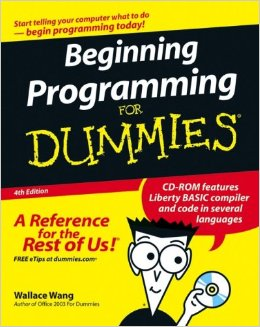
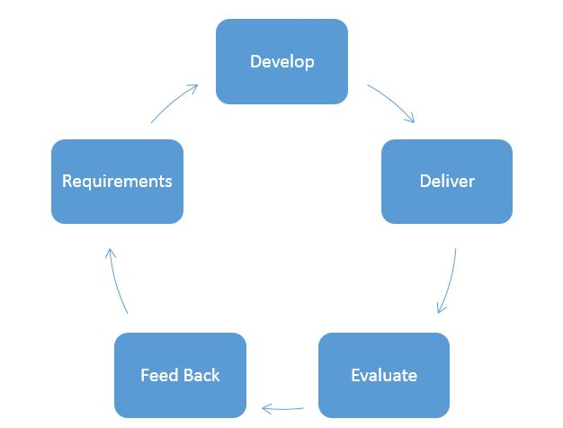

Unit Testing
How to write testable JavaScript
Created by Eric Clifford / @eclifford

Overview
- Why we test software
- A quick overview of the testing landscape
- The anatomy of a unit test
- Patterns / Anti Patterns of unit testable JavaScript
Why we test software
"Just because you’ve counted all the trees doesn’t mean you’ve seen the forest."
Software is hard
Most software projects fail
“60-70% of software projects fail”
“...only about 3% of those can be attributed to technical challenges”
What are some of the reasons our projects fail?
- Unrealistic or unarticulated project goals
- Badly defined system requirements (BDOF or none)
- Inaccurate estimates of needed resources
- Poor reporting of a project's status
- Sloppy development practices
The Iteration Cycle
The Iteration Cycle Explained
- To develop something, we first must understand what we are developing. We develop a series of functional requirements that match our business requirements.
- To deliver something, we write code that fulfills the agreed upon business requirements.
- To evaluate something, we rely on automated or manual testing to prove the requirements have been met.
- To provide feedback, the stakeholders reflect on current state of software available to them.
- As the iteration cycle closes, stakeholders assess work delivered in steps 1-4 and evolve requirements where necessary.
How does testing affect our feedback loop?
The cost of poor communication
- Software Entropy
As developers, how can we improve the feedback loop?
"Those who fail to learn from history are doomed to repeat it." ~ Winston Churchill
Extreme Programming
- A system of best practices formulated by Kent Beck in 1996, while working on a large payroll redesign at Chrysler.

Agile
- Extreme Programming practices are simply developer centric parts of the larger agile methodology.
Key Principles of XP/Agile
- Code must be written to agreed upon standards (DDD)
- Welcome changing requirements
- Technical delivery (velocity) should remain consistent and predicable
- Deliver working software frequently
- Working software is the primary measure of success and working software is defined as that which is tested
Working Software
Let's talk about tests
Testing Pyramid

What are Unit Tests?
- A unit test is a piece of code that drives a unit of work and then checks a single assumption about the behavior of that work
- Must run in isolation from other units
- Must be fast < 5ms
- Must produce consistent results regardless of the order the tests were run or the number of times run
Isolating a Unit: Test Doubles
- Stubs wrap existing functions or objects with canned behavior that doesn't call the actual underlying method or object
- Mocks are stubs with with pre-programmed expectations
- http://sinonjs.org/
What are Integration Tests?
- Integration tests confirm that two seperate units can work together by testing their interfaces
What are Acceptance Tests?
- Acceptance tests are end to end system tests that work by automatically "driving" your application from the users point of view
- Acceptance tests are typically written in BDD style with business functional requirements
- http://www.cucumberjs.com
- http://www.nightwatchjs.org
Unit Testing: Deep Dive
TDD Overview

Common Misconceptions about TDD
- That unit testing is primarly about fixing or preventing bugs
- That it doesn't matter if we write the tests before or after we write the code
- That testing first somehow implies no up front design
- That testing will be a large time commitment and slow down velocity
Red
- Implied knowledge of the Domain Model and a list of functional requirements
- Minimum up front design necessary to write tests that imply the inner workings of your unwritten code based on the functional requirements
- The writing of a test spec to explore the desired functional behavior
- The failing test to verify that your functional behavior is not implemented or passing
Green
- We implement our functional design to make the code pass
- We reevaulate our design decisions if necessary
- We avoid making future assumptions about our code KISS/YAGNI
Refactor
- We look for code smells
- Removal of code duplication
- Object, class, module, variable and method names should clearly represent their purpose and use
- Recognize common patterns and implement the necessary design patterns
- Rethink any slow running tests (as they are unacceptable)
- "Premature performance optimization is the root of all evil." ~ Knuth
Anatomy of a Test Harness
- Test Framework (Mocha, Jasmine, QUnit)
- Test Runner (Karma, Testem, Mocha CLI, Jasmine CLI/Browser)
- Assertion Library (Chai)
- Test Doubles (Sinon)
Test Framework
Responsible for defining syntax for test spec structuring BDD/TDD.
- Mocha
- Jasmine
- QUnit
Test Runner
Responsible for running and displaying results of unit test framework in either CLI or Browser.
- Karma
- Testem
- Jasmine CLI/Browser
- Mocha CLI/Browser
Assertion Library
Responsible for validating input/output in boolean fashion. Typically used to make tests more human readable.
- Chai
Anatomy of a Test Case
... implied setup
it("human readable functional requirement", function() {
// explicit setup
// execute unit under test
// one or more assertions
// explicit teardown
});
... implied teardown
- an implied or explicit setup
- an explict execution
- one or more assertions
- an implied or explicit teardown
Anatomy of a Test Suite
- A testing suite is a series of test cases that when run together, confirm the validity of a piece of software under test
- Typically provides grouping context (BDD) and helper methods for setup/teardown for groups of test cases
describe("foo", function() {
before(function() {
// setup test case
});
after(function() {
// teardown test case
});
it("human readable functional requirement", function() {
});
it("human readable functional requirement", function() {
});
it("human readable functional requirement", function() {
});
it("human readable functional requirement", function() {
});
});
Writing Testable JavaScript
Your primary benefit in writing tests is not the tests themselves, but in the act of writing code that can be tested
- We want to validate our initial design decisions
- We want to prove that our code delivers the desired functionality
- We want to assess that our code is malleable to change
- We want to confirm that our code is isolatable
The Single Responsibility Principle is a key tenant to writing testable code
The SRP states that a given context (class, function, variable) should have a single responsbility; that responsibility is defined as a single reason to change
Common Opportunites for Responsibility Change
- Calculation
- Mutation
- Configuration
- Communication
- Presentation
Exersize: FizzBuzz
Write a program that prints the numbers from 1 to 100. But for multiples of three print FizzBuzz instead of the number and for the multiples of five print Buzz. For numbers that are multiples of both three and five print FizzBuzz.
FizzBuzz: Simple Solution
var FizzBuzz = (function() {
return {
print: function() {
for (var i = 1; i <= 100; i++) {
if (i % 3 === 0 && i % 5 === 0) {
console.log("FizzBuzz");
} else if (i % 3 === 0) {
console.log("Fizz");
} else if (i % 5 === 0) {
console.log("Buzz");
} else {
console.log(i);
}
}
}
};
})();
FizzBuzz: A Better Solution
var FizzBuzz = (function() {
return {
// presentation
print: function() {
for (var i = 1; i <= 100; i++) {
console.log(this.calcuateFizzBuzz(i));
}
},
// calculation
calculateFizzBuzz: function(str) {
if (i % 3 === 0 && i % 5 === 0) {
return "FizzBuzz";
} else if (i % 3 === 0) {
return "Fizz";
} else if (i % 5 === 0) {
return "Buzz";
} else {
return i.toString();
}
}
};
})();
FizzBuzz: An Even Better Solution
var FizzBuzz = (function() {
return {
// configuration (workflow)
run: function() {
for(var i = 1; i < 100; i++) {
this.print(this.calculateFizzBuzz(i));
}
},
// presentation
print: function(str) {
console.log(str);
},
// calculation
calculateFizzBuzz: function(num) {
if (num % 3 === 0 && num % 5 === 0) {
return "FizzBuzz";
} else if (num % 3 === 0) {
return "Fizz";
} else if (num % 5 === 0) {
return "Buzz";
} else {
return num.toString();
}
}
};
})();
Unit Testing Best Practices
Test within your boundries. Don't test libraries you don't control.
- Avoid unit testing the DOM
- Don't test 3rd party libraries you don't control; assume they are already tested (jQuery, Backbone, etc)
- Test UI behavior at the acceptance level not at the unit level
Each method under test should have defined inputs and outputs
- To make code testable, we must eliminate implicit environmental configuration
- A function should have a predictable output based on its input
Automation is Important
"Imperfect tests, run frequently, are much better than perfect tests that are never written at all." ~ Martin Fowler
Happy Path
- Don't always test the happy path. It's often important to test both passing and failing conditions, as well as exception handling.
Run Test Cases in Isolation
- To avoid test specific race conditions or global variable leakage affecting your tests, run them with the `.only` flag in Mocha
Async Testing
- When testing async functionality, it's important to reduce the latency of the callback to the next turn through the event loop
- Fake time by using Sinons fake timers
Favor Pragmatism over Dogmatism
- Pragmatism implies an educated implementation of theories or beliefs put into practical application
- Dogmatism implies sticking to theoretical beliefs or theories without considering practicality
Public Examples
- http://www.github.com/eclifford/responsify
- http://www.github.com/eclifford/logr